ABOUT HEART RATE VARIABILITY
Heart rate variability (HRV) describes the variations between consecutive inter-beat-intervals or IBIs. Both sympathetic and parasympathetic branches of the ANS are involved in the regulation of heart rate (HR). Sympathetic nervous system (SNS) activity increases HR and decreases HRV, whereas parasympathetic nervous system (PNS) activity decreases HR and increases HRV Berntson et al. 1997. The control of the autonomic output involves several interconnected areas of central nervous system, which form the so-called central autonomic network. In addition to this central control, arterial baroreceptor reflex as well as respiration are known to induce quick changes in heart rate. The baroreflex is based on baroreceptors which are located on the walls of some large vessels and can sense the stretching of vessel walls caused by pressure increase. Both sympathetic and parasympathetic activity are influenced by baroreceptor stimulation trough a specific baroreflex arc (Fig. 1).
Typically, the most conspicuous oscillatory component of HRV is the respiratory sinus arrhythmia (RSA), where the vagus nerve stimulation is being cut-off during inhalation, and thus, HR increases during inhalation and decreases during exhalation (see video below). This high frequency (HF) component of HRV is thus centered at respiratory frequency and is considered to range from 0.15 to 0.4 Hz. Another conspicuous component of HRV is the low frequency (LF) component ranging from 0.04 to 0.15 Hz. The HF component is mediated almost solely by the PNS activity, whereas the LF component is mediated by both SNS and PNS activities and is also affected by baroreflex activity Task Force 1996, Berntson et al. 1997 . The origin of the LF oscillations is however considered to be dominated by SNS and the normalized power of the LF component could be used to assess sympathetic efferent activity Pagani et al. 1997, Furlan et al. 2000. The fluctuations below 0.04 Hz, on the other hand, have not been studied as much as the higher frequencies. These frequencies are commonly divided into very low frequency (VLF, 0.003-0.04 Hz) and ultra low frequency (ULF, 0-0.003 Hz) bands, but in case of short-term recordings the ULF band is generally omitted Task Force 1996. These lowest frequency rhythms are characteristic for HRV signals and have been related to, e.g., humoral factors such as the thermoregulatory processes and renin-angiotensin system Berntson et al. 1997.
Heart rate variability (HRV) is a commonly used tool when trying to assess the functioning of cardiac autonomic regulation. It has been used in multitude of studies, related to cardiovascular research and different human wellbeing applications, as an indirect tool to evaluate the functioning and balance of the autonomic nervous system (ANS).
One of the main clinical scenarios where HRV has been found valuable include the risk stratification of sudden cardiac death after acute myocardial infarction Task Force 1996, Acharya et al. 2006, Laitio et al. 2007, Pradhapan et al. 2014. In addition, decreased HRV is generally accepted to provide an early warning sign of diabetic cardiovascular autonomic neuropathy Task Force 1996, Acharya et al. 2006, the most significant decrease in HRV being found within the first 5-10 years of diabetes Vinik et al. 2013, Tarvainen et al. 2014. Besides these two main clinical scenarios, HRV has been studied with relation to several cardiovascular diseases, renal failure, physical exercise, occupational and psychosocial stress, gender, age, drugs, alcohol, smoking and sleep van Ravenswaaij-Arts et al. 1993, Malik et al. 1993, Task Force 1996, Pumprla et al. 2002, Achten et al. 2003, Acharya et al. 2006.
HRV TIME SERIES
QRS detection
The aim in HRV analysis is to examine the sinus rhythm modulated by the autonomic nervous system. Therefore, one should technically detect the occurrence times of the SA-node action potentials, which initiate every heart beat. In practical applications, this is not however possible. Instead, an the electrocardiogram (ECG) is recorded by placing two or more electrodes on skin contact and heart beats are detected from the ECG. The nearest observable activity in the ECG compared to SA-node firing is the P-wave resulting from atrial depolarization (see Fig. 2). The signal-to-noise ratio of the P-wave is, however, clearly lower than that of the strong QRS complex which results primarily from ventricular depolarization. Therefore, the heart beat period is commonly evaluated as the time difference between the easily detectable QRS complexes. A typical QRS detector consists of a preprocessing part followed by a decision rule. Several different QRS detectors have been proposed within last decadesThakor et al. 1983, Pahlm et al. 1985, Pan & Tompkins 1985, Hamilton et al. 1984, Friesen et al. 1990
The accuracy of the R-wave occurrence time estimates is often required to be 1–2 ms, and thus, the sampling frequency of ECG should be at least 500–1000 Hz Task Force 1996. If the sampling frequency of ECG is less than 500 Hz, the errors in R-wave occurrence times can cause critical distortion to HRV analysis results, especially to spectrum estimates Merri et al. 1990. The distortion of the spectrum is even bigger if the overall variability in heart rate is small Pinna et al. 1994. The estimation accuracy can however be improved by interpolating the QRS complex e.g. by using a cubic spline interpolation Daskalov et al. 1997 or some model based approach Bragge et al. 2005.
Pulse detection
Photoplethysmography (PPG) is a technique for monitoring blood volume changes in the micro vascular bed of tissue. Shortly after the QRS complex appears in the ECG, the ventricular systole generates a pulse wave which leads to a rapid increase in blood pressure and blood volume, this change is seen by the steep rise in the pulse wave (see Fig. 3). The subsequent decline corresponds to cardiac diastole and may contain a secondary peak, the so-called dicrotic notch, which is attributed to the closure of the aortic valve. Pulse-to-pulse interval (PP-interval) is defined as a time interval between the rising part of two consecutive pulse waves.
Depending on the pulse wave velocity and the vascular path from the heart, there is a delay between each QRS complex and the onset of its corresponding pulse wave. The delay is called pulse transit time (PTT) and is negatively correlated with blood pressure, arterial stiffness, and age. Physiological variability in PTT causes deviation between the PP-intervals and the RR-intervals. Since PP and RR intervals are not equal, it is always better to use the term pulse rate variability (PRV) rather than HRV when PPG measurement is used. Usability and accuracy of PRV as an estimate of HRV has been widely studied. A good review on the topic can be found from Schafer et al 2013, with the following concluding remarks:
- PRV as an estimate of HRV has been proved to be sufficiently accurate only for healthy (and mostly younger) subjects at rest.
- Moderate physical or mental stress tends to diminish agreement between PRV and HRV to an extent that is or is not acceptable.
- Physically more active states, such as walking or physical exercising, the agreement between PRV and HRV often becomes insufficient, mostly due to motion artifacts.
Beat detection algorithms in Kubios HRV software
In case ECG data is imported into Kubios HRV software, the R-wave time instants are automatically detected by applying a built-in QRS detection algorithm. This in-house developed detection algorithm is based on the Pan–Tompkins algorithmPan & Tompkins 1985. The detector consists of a preprocessing part followed by decision rules.The preprocessing part includes bandpass filtering of the ECG (to reduce power line noise, baseline wander and other noise components), squaring of the data samples (to highlight peaks) and moving average filtering (to smooth close-by peaks). The decision rules include amplitude threshold and comparison to expected value between adjacent R-waves. Both of these rules are adjusted adaptively every time a new R-wave is acceptably detected. Before R-wave time instant extraction, the R-wave is interpolated at 2000 Hz to improve the time resolution of detection. The up-sampling can significantly improve the time resolution of R-wave detection when the sampling rate of the ECG is low.

Pulse wave detector of Kubios HRV software is based on the matched filtering approach. Firstly, maximum of 1st derivative representing the steepest part of the pulse wave is used for initial pulse location estimation. Secondly, a template for the pulse wave (and matched filter) is constructed using the initial pulses. Decision of the final pulse wave locations are defined by comparing the filtered signal against varying threshold and comparing normalized error between the template and the PPG signal. Allowed normalized error between template and pulse wave under inspection can be adjusted in software preferences. That is, the smaller the acceptance threshold percent is the more similar the pulse wave have to be with the template in order to be accepted. The accuracy of the pulse wave detection algorithm is shown in Fig. 4. The left panel showing the Bland-Altman plot illustrating the agreement between detected PP intervals and corresponding RR intervals during a resting measurement. The right panel shows error percentages of commonly used HRV parameters estimated from PP interval compared to RR interval time series. Used dataset contains 20 healthy volunteers with wide age scale (20 to 50 years). The error between the RR and PP intervals was -0.01±5.16 ms (mean ± SD). This ±5 ms error in heart beat detection produces approximately ±10 % maximum errors to the HRV parameters.
Inter-beat interval (IBI) time series
After the beat occurrence times (i.e. QRS complex or pulse wave fiducial points) have been detected, an inter-beat interval (IBI) time series can be derived. Instead of IBI, we will here use the term RR interval, which refers to time interval between successive ECG R-wave occurrence times. The n‘th RR interval is obtained as the difference between the R-wave occurrence times 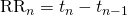. In some context, normal-to-normal (NN) may also be used when referring to these intervals indicating strictly intervals between successive QRS complexes resulting from SA-node depolarization Task Force 1996. In practice when analysing normal sinus rhythm, the NN and RR intervals are the same, and thus, the term RR is preferred here.
The time series constructed from all available RR intervals is not equidistantly sampled, but has to be presented as a function of time, i.e. as values (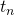,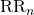). This fact has to be taken into account before frequency-domain analysis. In general, three different approaches have been used to get around this issue Task Force 1996. The simplest approach that have been adopted e.g. in Baselli et al. 1987 is to assume equidistant sampling and calculate the spectrum directly from the RR interval tachogram (RR intervals as a function of beat number), see Fig. 5 middle panel. This assumption can however cause distortion into the spectrum Mateo et al. 2000. This distortion becomes substantial when the variability is large in comparison to the mean RR interval length. Furthermore, the spectrum can not be considered to be a function of frequency, but rather a function of cycles per beat Task Force 1996, see Fig. 5 bottom panel. One choice for the interpolation method is the cubic spline interpolation Mateo et al. 2000. After interpolation, regular spectrum estimation methods can be applied. The third general approach is to apply methodology, which are designed for analysing non-equidistantly sampled data. Such a method is for example the Lomb-Scargle periodogram, which computes the periodogram spectrum estimate for non-equidistantly sampled data van Dongen et al. 1999.
PREPROCESSING OF RR DATA
(↥ Back to top)
Careful preprocessing of RR interval data is very important before analysing or interpreting HRV data.
Any artefact in the RR interval time series may significantly interfere
the analysis of these signals. The artefacts within HRV signals can be
divided into technical and physiological artefacts. The technical
artifacts include missing, extra or misaligned QRS complex detections.
These artefacts may be due to measurement noise or due to incompetence
of the detection algorithm. Physiological artefacts include ectopic
beats and arrhythmic events. In order to avoid the interference of such
artefacts, the ECG recording and the corresponding event series should
always be manually checked for artefacts and only artefact-free sections
should be included in the analysis Task Force 1996.
Alternatively, if the amount of artefact-free data is insufficient,
proper interpolation methods can be used to reduce these artefacts, see
e.g. Lippman et al. 1993, Lippman et al. 1994, Mateo et al. 2003.
In addition to artefacts, slow changes in mean HR during the recording can have undesirable effects on certain HRV analysis parameters. Such slow nonstationarities are characteristic for HRV signals and should be considered before the analysis. The origins of nonstationarities in HRV are discussed e.g. in Berntson et al. 1997. The slow nonstationary trends can be easily removed from the HRV time series before analysis. Detrending can be performed using first order Litvack et al. 1995, Mitov et al. 1998 or higher order polynomial Porges et al. 1990, Mitov et al. 1998 models. In addition, Kubios HRV software includes an advanced detrending procedure originally presented in Tarvainen et al. 2002. This approach is based on smoothness priors regularization and is described in detail below.
Artefact correction methods
Kubios HRV software provides excellent tools for handling artefacts. First, the R-wave detections can be corrected manually when
ECG data is available, which provides true beat intervals but is
reasonable only when when data includes a limited number of
misdetections. Secondly, the software includes two artefact correction
methods: 1) Threshold based correction algorithm, and 2) Automatic
correction algorithm. Details of these correction methods are given
below.
Threshold based artefact correction algorithm
The threshold based artefact correction algorithm compares every RR interval value against a local average interval. The local average is obtained by median filtering the RR interval time series, and thus, the local average is not affected by single outliers in RR interval time series. If an RR interval differs from the locale average more than a specified threshold value, the interval is identified as an artefact and is marked for correction. The threshold value can be selected from:
- Very low: 0.45 sec (threshold in seconds)
- Low: 0.35 sec
- Medium: 0.25 sec
- Strong: 0.15 sec
- Very strong: 0.05 sec
- Custom, for setting a custom threshold in seconds
For example, the “Medium” correction level will identify all RR intervals that are larger/smaller than 0.25 seconds compared to the local average. The correction is made by replacing the identified artefacts with interpolated values using a cubic spline interpolation. It should be noted, that these threshold are adjusted with mean heart rate. That is, thresholds shown above are for HR of 60 beats/min, but for higher HR the thresholds are smaller (because the variability is expected to decrease when HR increases) and vice versa for lower heart rates.
Because the artefacts are identified by simple thresholding and normal HRV level is highly individual, the correction level should be adjusted individually as follows. First, identify if there are any artefacts in your data that should be corrected. If there are artefacts, then select the lowest possible correction level, which identifies the artefacts but does not identify too many normal RR intervals as artefacts.
Automatic artefact correction algorithm
In automatic correction algorithm artefacts are detected from dRR series, which is a time series consisting of differences between successive RR intervals. The dRR series provides a robust way to separate ectopic and misplaced beats from the normal sinus rhythm. To separate ectopic and normal beats, time varying threshold (Th) is used. To ensure adaptation to different HRV levels, the threshold is estimated from the time-varying distribution of dRR series. For each beat, quartile deviation of the 90 surrounding beats is calculated and multiplied by factor 5.2. Beats within this range cover 99.95% of all beats if RR series is normally distributed. However, RR interval series is not often normally distributed, and thus, also some of the normal beats exceed the threshold. Therefore, decision algorithm is needed to detect artefact beats.
| BEAT TYPE | NBR OF BEATS | MEAN Δt (ms) | DETECTION (%) |
|---|---|---|---|
| Sinus beats | 61 757 | – | 99.963% |
| Missed beats | 610 | – | 100% |
| Extra beats | 610 | – | 100% |
| Misaligned beats (q=2) | 610 | 58 ms | 53.9% |
| Misaligned beats (q=4) | 610 | 119 ms | 99.3% |
| Misaligned beats (q=6) | 610 | 238 ms | 100% |
Ectopic beats form negative-positive-negative (NPN) or positive-negative-positive (PNP) patterns to the dRR series. Similarly long beats form positive-negative (PN) and short beats negative-positive (NP) patterns to the dRR series. Only dRR segments containing these patterns are classified as artefact beats. Missed or extra beats are detected by comparing current RR value with median of the surrounding 10 RR interval values (medRR). A missed beat is detected if current RR interval (RR(i)) satisfies condition
(1) 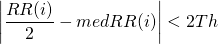
and an extra beat is detected if two successive RR intervals (RR(i) and RR(i+1)) satisfies condition
(2) 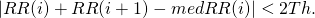
Correction of detected artefacts: Detected ectopic beats are corrected by replacing corrupted RR times by interpolated RR values. Similarly too long and short beats are corrected by interpolating new values to the RR time series. Missed beats are corrected by adding new R-wave occurrence time and extra beats are simply corrected by removing extra R-wave detection and recalculating RR interval series.
Detrending of RR interval data
The theory behind the smoothness priors detrending methods inluded in Kubios HRV software is described shortly here. For more details, see Tarvainen et al. 2002.
Let 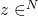 denote the RR interval time series which can be considered to consist of two components
(3) 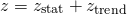
where 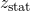 is the nearly stationary RR interval series of interest, 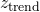 is the low frequency aperiodic trend component, and 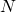 is the number of RR intervals. Suppose that the trend component can be modeled with a linear observation model as
(4) 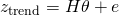
where  is the observation matrix, 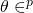 are the regression parameters, and is the observation error. The task is then to estimate the parameters by some fitting procedure so that 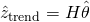
can be used as the estimate of the trend. The properties of the
estimate depend strongly on the properties of the basis vectors (columns
of the matrix 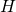) in the fitting. A widely used method for the solution of the estimate 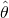 is the least squares method. However, a more general approach for the estimation of is used here. That is, the so-called regularized least squares solution
is the observation matrix, 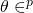 are the regression parameters, and is the observation error. The task is then to estimate the parameters by some fitting procedure so that 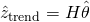
can be used as the estimate of the trend. The properties of the
estimate depend strongly on the properties of the basis vectors (columns
of the matrix 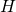) in the fitting. A widely used method for the solution of the estimate 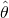 is the least squares method. However, a more general approach for the estimation of is used here. That is, the so-called regularized least squares solution
(5) 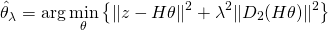
where 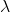 is the regularization parameter and 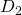
indicates the discrete approximation of 2nd order derivative. This is a
modification of the ordinary least squares solution, dragging the
solution to the direction in which the norm 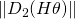 gets smaller. In this way, prior information about the predicted trend 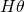 can be implemented to the estimation. The solution of (5) can be written in the form
(6) 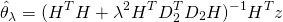
and the estimate for the trend which is to be removed can be written as
(7) 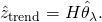
The selection of the observation matrix can be implemented according to some known properties of the data 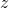. However, here we use a trivial choice of identity matrix 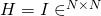. In this case, the regularization part of (5)
simply draws the solution towards a curve for which the 2nd order
difference is zero, i.e. towards first order linear curve. With these
specific choices, the detrended nearly stationary RR series can be
written as
(8) 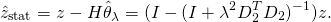
This detrending method works like a time-varying highpass filter, where the cutoff frequency can be adjusted by changing the smoothing parameter . In Kubios HRV Premium software, the cutoff frequency related to the given smoothing parameter is presented. The smoothing parameter is by default selected to remove only VLF frequency components from the RR time series.
HRV ANALYSIS METHODS
(↥ Back to top)
In this section, the analysis methods available in Kubios HRV software
are introduced. The presented methods are mainly based on the guidelines
given in Task Force 1996. The
presentation of the methods is divided into four categories, i.e.
time-domain, frequency-domain, nonlinear, and time-varying methods. The
methods are summarized in Table 1.
Time-domain methods
The time-domain methods are derived from the beat-to-beat RR interval
values in time domain. Let the RR interval time series include successive beat intervals, i.e. 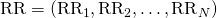. The mean RR interval () and the mean heart rate (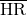) are then defined as
(9) 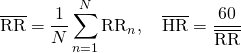
where denotes the value of 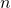‘th
RR interval. Several HRV parameters that measure the variability within
the RR time intervals in time-domain exist. The standard deviation of
RR intervals (SDNN) is defined as
(10) 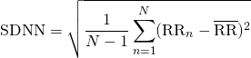
SDNN reflects the overall (both short-term and long-term) variation
within the RR interval time series, whereas the standard deviation of
successive RR interval differences (SDSD) given by
(11) 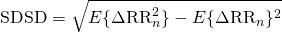
is a measure of short-term (beat-by-beat) variability. For stationary RR series 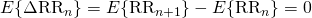 and SDSD equals the root mean square of successive differences (RMSSD) given by
(12) 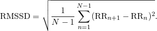
Another measure calculated from successive RR interval differences is
the NN50 which is the number of successive intervals differing more
than 50 ms or the corresponding relative amount
(13) 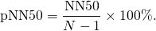
In addition to the above statistical measures, there are some geometric measures that are calculated from the RR interval histogram. The HRV triangular index is obtained as the integral of the histogram (i.e. total number of RR intervals) divided by the height of the histogram which depends on the selected bin width. In order to obtain comparable results, a bin width of 1/128 seconds is recommended Task Force 1996. Another geometric measure is the TINN which is the baseline width of the RR histogram evaluated through triangular interpolation, see Figure 6A.
The Baevsky’s stress index (SI) is computed according to the formula Baevsky 2009
(14) 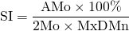
where AMo is the so-called mode amplitude presented in percent, Mo is the mode (the most frequent RR interval) and MxDMn is the variation scope reflecting degree of RR interval variability (see Figure 6B). The mode Mo is simply taken as the median of the RR intervals. The AMo is obtained as the height of the normalised RR interval histogram (bin width 50 msec) and MxDMn as the difference between longest and shortest RR interval values. In order to make SI less sensitive to slow changes in mean heart rate (which would increase the MxDMn and lower AMo), the very low frequency trend is removed from the RR interval time series by using the smoothness priors method Tarvainen et al 2002. In addition, the square root of SI is taken to transform the tailed distribution of SI values towards normal distribution. The square root transformation also makes the SNS index described later less sensitive to extreme SI values.
Frequency-domain methods
In the frequency-domain methods, a power spectrum density (PSD) estimate is calculated for the RR interval series. The regular spectrum estimators implicitly assume equidistant sampling and, thus, the RR interval series is converted to equidistantly sampled series by interpolation methods prior to spectrum estimation. In Kubios HRV software a cubic spline interpolation method is used. In HRV analysis, the spectrum is generally estimated using either a Fast Fourier transformation (FFT) based methods or parametric autoregressive (AR) modeling based methods. For details on these methods see, e.g., Marple 1987. The advantage of FFT based methods is the simplicity of implementation, while the AR spectrum yields improved resolution especially for short samples. Another property of AR spectrum that has made it popular in HRV analysis is that it can be factorized into separate spectral components.
In Kubios HRV software, the HRV spectrum is calculated with FFT based Welch’s periodogram method and with the AR method. Spectrum factorization in AR method is optional. In the Welch’s periodogram method the HRV sample is divided into overlapping segments. The spectrum is then obtained by averaging the spectra of these segments, which decreases the variance of the FFT spectrum.
Kubios HRV software includes also the Lomb-Scargle periodogram van Dongen et al. 1999, which differs from the Welch’s periodogram in the sense that it does not assume equidistant sampling and is thus computed directly from the non-interpolated RR interval time series. The variance of the Lomb-Scargle periodogram is decreased by smoothing the periodogram using MA-filering (the window width of the MA-filter can be adjusted in software preferences).
The generalized frequency bands in case of short-term HRV recordings are the very low frequency (VLF, 0–0.04 Hz), low frequency (LF, 0.04–0.15 Hz), and high frequency (HF, 0.15–0.4 Hz). The frequency-domain measures extracted from a spectrum estimate for each frequency band include absolute and relative powers of VLF, LF and HF bands; LF and HF band powers in normalized units; the LF/HF power ratio; and peak frequencies for each band (see Table 1). In the case of FFT spectrum, absolute power values for each frequency band are obtained by simply integrating the spectrum over the band limits. In the case of AR spectrum, on the other hand, if factorization is enabled distinct spectral components emerge for each frequency band with a proper selection of the model order and the absolute power values are obtained directly as the powers of these components. If factorization is disabled the AR spectrum powers are calculated as for the FFT spectrum. The band powers in relative and normalized units are obtained from the absolute values as described in Table 1.
Nonlinear methods
Considering the complex control systems of the heart it is reasonable to assume that nonlinear mechanisms are involved in heart rate requlation. The nonlinear properties of HRV have been analysed using measures such as Poincaré plot Brennan et al. 2001, Carrasco et al. 2001, approximate and sample entropy Richman & Moorman 2000, Fusheng et al. 2001, detrended fluctuation analysis Peng et al. 1995, Penzel et al. 2003, correlation dimension Guzzetti et al 1996, Henry et al. 2001, and recurrence plots Webber et al. 1994, Trulla et al. 1996, Zbilut et al. 2002. During the last years, the number of studies utilizing such methods have increased substantially. The downside of these methods is still, however, the difficulty of physiological interpretation of the results.
Poincaré plot
One commonly used nonlinear method that is simple to interpret is the
so-called Poincaré plot. It is a graphical representation of the
correlation between successive RR intervals, i.e. plot of 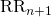 as a function of .
The shape of the plot is essential and a common approach to
parameterize the shape is to fit an ellipse to the plot as shown in Fig. 8. The ellipse is oriented according to the line-of-identity ().
The standard deviation of the points perpendicular to the
line-of-identity denoted by SD1 describes short-term variability which
is mainly caused by RSA. It can be shown that SD1 is related to the
time-domain measure SDSD according toBrennan et al. 2001
(15) 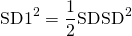
where SDSD is defined as 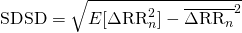,
which is equal to RMSSD for stationary time series. The standard
deviation along the line-of-identity denoted by SD2, on the other hand,
describes long-term variability and has been shown to be related to
time-domain measures SDNN and SDSD by Brennan et al. 2001
(16) 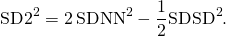
The standard Poincaré plot can be considered to be of the first order. The second order plot would be a three dimensional plot of values (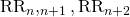). In addition, the lag can be bigger than 1, e.g., the plot (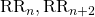).
Approximate entropy
Approximate entropy (ApEn) measures the complexity or irregularity of the signal Richman & Moorman 2000, Fusheng et al. 2001. Large values of ApEn indicate high irregularity and smaller values of ApEn more regular signal. The ApEn is computed as follows.
First, a set of length 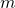 vectors 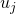 is formed
(17)
where is called the embedding dimension and
is the number of measured RR intervals. The distance between these
vectors is defined as the maximum absolute difference between the
corresponding elements, i.e.
(18)
Next, for each the relative number of vectors for which is calculated. This index is denoted with and can be written in the form
(19)
Due to the normalization, the value of is always smaller or equal to 1. Note that the value is, however, at least since is also included in the count. Then, take the natural logarithm of each and average over to yield
(20)
Finally, the approximate entropy is obtained as
(21)
Thus, the value of the estimate ApEn depends on three parameters, the length of the vectors , the tolerance value , and the data length . In Kubios HRV software the default value of is set to be . The length of the data also affects ApEn. When is increased the ApEn approaches its asymptotic value. The tolerance has a strong effect on ApEn and it should be selected as a fraction of the standard deviation of the RR interval data (SDNN). This selection enables the comparison of RR data from different subjects. A common selection for is , which is also the default value in Kubios HRV software.
Sample entropy
Sample entropy (SampEn) is similar to ApEn, but there are two important differences in its calculation Richman & Moorman 2000, Lake et al. 2002. For ApEn, in the calculation of the number of vectors for which also the vector itself is included. This ensures that
is always larger than 0 and the logarithm can be applied, but at the
same time it causes bias to ApEn. In sample entropy the self-comparison
of is eliminated by calculating as
(22)
Now the value of will be between 0 and 1. Next, the values of are averaged to yield
(23) 
and the sample entropy is obtained as
(24)
The default values set for the embedding dimension and for the tolerance parameter in Kubios HRV software are the same as those for the ApEn computation. Both ApEn and SampEn are estimates for the negative natural logarithm of the conditional probability that a data of length , having repeated itself within a tolerance for points, will also repeat itself for points. SampEn was designed to reduce the bias of ApEn and has a closer agreement with the theory for data with known probabilistic content Lake et al. 2002.
Multiscale entropy (MSE)
Multiscale entropy (MSE) is an extension of SampEn in the sense that it incorporates two procedures Costa et al. 2005
- A coarse-graining process is applied to the RR interval time series. Multiple coarse-grained time series are constructed for the time series by averaging the data points within non-overlapping windows of increasing length , where represents the scale factor and is selected to range between . The length of each coarse-grained time series is , where is the number of RR intervals in the data. For scale , the coarse-grained time series is simply the original beat-to-beat RR interval time series.
- SampEn is calculated for each coarse-grained time series. SampEn as a function of the scale factor produces the MSE. MSE for scale factor returns standard SampEn (computed from the original data points).
Detrended fluctuation analysis
Detrended fluctuation analysis (DFA) measures the correlation within the signal. The correlation is extracted for different time scales as follows Peng et al. 1995. First, the RR interval time series is integrated
 as a function of segment length . and are the short term and long term fluctuation slopes, respectively.
as a function of segment length . and are the short term and long term fluctuation slopes, respectively.(25)
where is the average RR interval. Next, the integrated series is divided into segments of equal length . Within each segment, a least squares line is fitted into the data. Let denote these regression lines. Next the integrated series
is detrended by subtracting the local trend within each segment and the
root-mean-square fluctuation of this integrated and detrended time
series is calculated by
(26)
This computation is repeated over different segment lengths to yield the index as a function of segment length . Typically
increases with segment length. A linear relationship on a double log
graph indicates presence of fractal scaling and the fluctuations can be
characterized by scaling exponent (the slope of the regression line relating to . Different values of indicate the following
- : Brown noise (integral of white noise)
- : Different kinds of noise
 : noise
: noise- :Large values are likely to be followed by large value and vice versa
- : White noise
- : Large value is likely to be followed by small value and vice versa
Typically, in DFA the correlations are divided into short-term and long-term fluctuations. In Kubios HRV software, the short-term fluctuations are characterized by the slope obtained from the (,) graph within range (default values). Correspondingly, the slope obtained by default from the range characterizes long-term fluctuations, see Fig. 9.
Correlation dimension
Another method for measuring the complexity or strangeness of the time series is the correlation dimension which was proposed in Grassberger et al. 1983. The correlation dimension is expected to give information on the minimum number of dynamic variables needed to model the underlying system and it can be obtained as follows.
Similarly as in the calculation of approximate and sample entropies, form length vectors
(27)
and calculate the number of vectors for which , that is
(28) 
where the distance function is now defined as
(29) 
Next, an average of the term is taken
(30)
which is the so-called correlation integral. The correlation dimension
is defined as the limit value
(31)
In practice this limit value is approximated by the slope of the regression curve Henry et al. 2001. The slope is calculated from the linear part of the log-log plot, see Fig. 10. The slope of the regression curves tend to saturate on the finite value of when is increased. In the software, a default value of was selected for the embedding.
Recurrence plot analysis
Yet another approach, included in the software, for analyzing the
complexity of the time series is the so-called recurrence plot (RP) analysis. In this approach, vectors
(32)
where is the embedding dimension and the embedding lag. The vectors then represent the interval time series as a trajectory in dimensional space. A recurrence plot is a symmetrical matrix of zeros and ones. The element in the ‘th row and ‘th column of the RP matrix, i.e. RP(,), is 1 if the point on the trajectory is close to point . That is
(33)
where is the Euclidean distance given in (29) and is a fixed threshold. The structure of the RP matrix usually shows short line segments of ones parallel to the main diagonal. The lengths of these diagonal lines describe the duration of which the two points are close to each other. An example RP for HRV time series is presented in Fig. 11. Methods for quantifying recurrence plots were proposed in Webber et al. 1994. The methods included in this software are introduced below.
In the software the following selections were made. The embedding dimension and lag were selected to be (default value) and (fixed), respectively. The threshold distance was selected to be
(default value), where SD is the standard deviation of the RR time series. The selection are similar to those made in
Dabire et al 1998.
The first quantitative measure of RP is the recurrence rate (REC) which is simply the ratio of ones and zeros in the RP matrix. The number of elements in the RP matrix for is equal to and the recurrence rate is simply given as
(34)
The recurrence rate can also be calculated separately for each diagonal parallel to the line-of-identity (main diagonal). The trend of REC as a function of the time distance between these diagonals and the line-of-identity describes the fading of the recurrences for points further away. %This trend can be obtained by linear regression.
The rest of the RP measures consider the lengths of the diagonal lines. A threshold is used for excluding the diagonal lines formed by tangential motion of the trajectory. The maximum line length is denoted and its inverse, the divergence,
(35)
has been shown to correlate with the largest positive Lyapunov exponent Trulla et al. 1996. The average diagonal line length, on the other hand, is obtained as
(36)
where is the number of length lines. The determinism of the time series is measured by the variable
(37)
Finally, the Shannon information entropy of the line length distribution is defined as
(38)
where is the number of length lines divided by the total number of lines, that is
(39)
PNS and SNS indexes
Parasympathetic nervous system (PNS) activity (vagal stimulation) is known to decrease heart rate and increase HRV. The sympathetic nervous system (SNS) activity having the opposite effect on HR and HRV, i.e. it increases HR and decreases HRV. Therefore, HR is lowest and HRV is highest when we are in rest and fully recovered. During stressful situations when sympathetic nervous activity is increased, out HR is higher and HRV is smaller.
The PNS index in Kubios HRV software is computed based on Mean RR (ms), RMSSD (ms) and SD1 (%). Cardiac vagal activity is known to increase mean RR interval (i.e. decrease HR), thus Mean RR is a natural choice for the PNS index computation. In addition to mean heart rate, cardiac vagal activity affects HRV by regulating the magnitude of the respiratory sinus arrhythmia (RSA) component. The RSA is observed as quick changes in RR interval linked to respiration, i.e. decrease in RR during inhalation and increase in RR during exhalation . In time-domain these quick beat-to-beat changes in RR interval can be best captured by the RMSSD parameter, which is why this parameter is the second input for the PNS index computation. In frequency-domain, the RSA component is typically observed as a peak within the high frequency (HF) band of the RR interval spectrum. This HF component is centered at the respiratory rate and its power is known to correlate strongly with the RMSSD. The power of the HF component in normalized units provides an alternative index for parasympathetic activity, and similarly, the low frequency (LF) component in normalized units (or the LF/HF ratio) has been widely used as an index of sympathetic activity or sympathovagal balance Task Force 1996. The problem with the HF component is that in case of spontaneous breathing, especially when the natural breathing rate of the subject is low (below 0.15 Hz or 9 breaths/min), the RSA component is partially, or even completely, overlaping with the LF component. Since Poincare plot index SD1 is known to be linked to RMSSD Brennan et al. 2001 and the ratio SD2/SD1 correlates with LF/HF ratio, the normalized SD1 value is used in Kubios HRV as the third input parameter for the PNS index computation.
The SNS index in Kubios HRV software is computed based on Mean HR (bpm), Baevsky’s stress index and SD2 (%). The mean HR is an evident choice, since the increase in HR is known to be linked to increased cardiac sympathetic activation. The Baevsky’s stress index is a rather widely used index of cardiovascular system stress and is strongly linked to sympathetic nervous activity. Finally, the normalized Poincare plot parameter SD2 provides a robust index of sympathovagal balance and is thus used as the third input parameter for SNS index computation.
During exercise cardiac vagal activity withdrawal followed by increased sympathetic activation takes place causing HR to increase as a function of exercise intensity. A curvilinear decrease in HRV shown both in time-domain and frequency-domain variables is observed during exercise and the minimum level of variability is typically reached at moderate to high intensity. RMSSD associated to parasympathetic activity typically reaches the minimum level already at moderate intensity (120-140 bpm, or 50-60% VO2max). The normalized LF power (or similarly SD2 (%)) typically increases during low-moderate intensity exercise and decresaes during higher intensity exercise, while normalized HF power (or SD1 (%)) shows the opposite exercise related response. In addition, a slight increase in HRV close to maximum intensities have been observed in some studies, but this might originate from non-neural mechanisms such as direct mechanical effects of respiration on the SA node. Scott et al. 2017
In conclusion, the PNS index is computed from Mean RR (ms), RMSSD (ms) and SD1 (%); and SNS index is from Mean HR (bpm), Baevsky’s stress index and SD2 (%). Each parameter value is first compared to their normal population values as presented in Nunan et al. 2010. The normal values for the SD1 and SD2 are derived based on their dependency on the time-domain variables RMSSD and SDNN as described in Brennan et al. 2001. The normal values for the Baevsky’s stress index are taken from Baevsky 2009. The parameter values are then scaled with the standard deviations of normal population and finally a proprietary weighting is applied to obtain robust and reliable PNS and SNS index values. The known links between exercise intensity, heart rate and HRV (as shortly described above) have also been taken into account in the optimization of the weighs adopted in PNS and SNS index computations.
The interpretation of the PNS and SNS indexes is straightforward. A PNS (or SNS) index value of zero means that the parameters reflecting parasympathetic (or sympathetic) activity are on average equal to the normal population average. Correspondingly, non-zero PNS index values describe how many SDs below (negative values) or above (positive values) the normal population average the parameter values are. Please note that the normal values presented in Nunan et al. 2010 are extracted from resting HRV measurements. Thus in rest, the PNS and SNS indexes are typically (with 95% of population) within -2…+2, i.e. within ±2SD of the normal population distribution (see Fig. 12). But during stress or during high intensity exercise much lower PNS index and much higher SNS index values can be observed.
Time-varying analysis
Time-varying analysis enables us to examine the changes occurring in RR interval time series as a function of time. Time-varying trends for time-domain and nonlinear HRV parameters can be obtained by applying a moving window over the RR data. The window should be long enough to provide accurate HRV analysis, but too long window tends to over-smooth the changes in RR data. A good choice for the analysis window is 5-10 minutes when analyzing longer measurementsTask Force 1996. The window shift only affects on the time grid in which the time-varying analysis results are provided. In Kubios HRV software, both the window width and the shift can be defined by the user. The trends of the frequency-domain HRV parameters are computed based on a time-varying spectrum estimate. In Kubios HRV software, the time-varying spectrum is estimated either by using the short-time Fourier transformation (also known as spectrogram) method or by using a time-varying AR spectrum estimate. In the time-varying AR method, AR coefficients are estimated iteratively by using a Kalman smoother algorithm. The adaptation of the Kalman smoother algorithm can be adjusted, which affects on the resolution of the spectrum. For details on the Kalman smoother spectrum estimation see Tarvainen et al. 2006. An example of time-varying analysis of a 48-hour HRV recording is shown in Fig. 13.
The time-varying methods of Kubios HRV software include the trends of the time-domain measures , SDNN, , Min HR, Max HR, RMSSD, NNxx, pNNxx, HRV triangular index and TINN. For frequency-domain measures the trends are obtained for VLF, LF, and HF peak frequencies; VLF, LF, and HF band powers (both in ms and log-transformed); relative LF and HF band powers (both in \% and in n.u. units); and LF/HF ratio. Also the ECG derived respiration (EDR) is presented under frequency-domain parameters when ECG data is available. In addition, trends are calculated for the nonlinear measures Poincar{\e’} plot SD1, SD2 and SD2/SD1 ratio; approximate and sample entropies (ApEn and SampEn); detrended fluctuation analysis (DFA) slopes and .
Summary of HRV parameters
A summary of the most commonly used HRV parameters is given in the table below under Time-domain, Frequency-domain and Nonlinear categories. Under the Overview category, description of additional variables available in Kubios HRV software are summarized.
| PARAMETER | UNITS | DESCRIPTION |
|---|---|---|
| Overview | ||
| PNS index | – | Parasympathetic nervous system activity compared to normal resting values |
| SNS index | – | Sympathetic nervous system activity compared to normal resting values |
| HR zones | [%] | Time spent in Maximum, Hard, Moderate, Light, Very light, and Inactive HR zones |
| Stress zones | [%] | Time spent in Very high, High, Elevated, Normal, and Low stress levels |
| RMSSD zones | [%] | Time spent in Very low, Low, Lowered, Normal, and High RMSSD levels |
| Energy exp. | [kcal] | Energy expenditure is divided into Basal Metabolic Rate (BMR), diet-induced thermogenesis (DIT) and activity related energy expenditure. BMR is esitmated with Mifflin-St Jeor formula and energy expenditure (EE) using Keytel’s modelMifflin et al. 1990, Keytel et al. 2005 |
| Time-domain | ||
| RR |
[ms] | The mean of RR intervals |
| STD RR (SDNN) | [ms] | Standard deviation of RR intervals |
| HR |
[beats/min] | The mean heart rate |
| Min & Max HR | [beats/min] | Minimum and maximum HR computed using N beat moving average (default value: N=5) |
| RMSSD | [ms] | Square root of the mean squared differences between successive RR intervals |
| NNxx | [beats] | Number of successive RR interval pairs that differ more than xx ms (default value: xx=50) |
| pNNxx | [%] | NNxx divided by the total number of RR intervals |
| HRV triangular index | – | The integral of the RR interval histogram divided by the height of the histogram |
| TINN | [ms] | Baseline width of the RR interval histogramTask Force 1996 |
| Stress index | – | Square root of Baevsky’s stress indexBaevsky 2009 |
| SDANN | [ms] | Standard deviation of the averages of RR intervals in 5-min segmentsTask Force 1996 |
| SDNNI | [ms] | Mean of the standard deviations of RR intervals in 5-min segmentsTask Force 1996 |
| Frequency-domain | ||
| Spectrum | Welch’s (or Lomb-Scargle) periodogram and AR spectrum estimates | |
| Peak frequency | [Hz] | VLF, LF, and HF band peak frequencies |
| Absolute power | [ms2] | Absolute powers of VLF, LF, and HF bands |
| Absolute power | [log] | Natural logarithm transformed values of absolute powers of VLF, LF, and HF bands |
| Relative power | [%] | Relative powers of VLF, LF, and HF bands: VLF [%] = VLF [ms2] / total power [ms2] x 100% LF [%] = LF [ms2] / total power [ms2] x 100% HF [%] = HF [ms2] / total power [ms2] x 100% |
| Normalized power | [n.u.] | Powers of LF and HF bands in normalised units: LF [n.u.] = LF [ms2] / (total power [ms2] – VLF [ms2]) x 100% HF [n.u.] = HF [ms2] / (total power [ms2] – VLF [ms2]) x 100% |
| LF/HF | – | Ratio between LF and HF band powers |
| EDR | [Hz] | ECG derived respiration (available only if ECG data is used for HRV analysis) |
| Nonlinear | ||
| SD1 | [ms] | In Poincaré plot, the standard deviation perpendicular to the line-of-identity Brennan et al. 2001, Carrasco et al. 2001 |
| SD2 | [ms] | In Poincaré plot, the standard deviation along the line-of-identity |
| SD2/SD1 | – | Ratio between SD2 and SD1 |
| ApEn | – | Approximate entropyRichman & Moorman 2000, Fusheng et al. 2001 |
| SampEn | – | Sample entropyRichman & Moorman 2000 |
| DFA, α1 | – | In detrended fluctuation analysis, short term fluctuation slopePeng et al. 1995, Penzel et al. 2003 |
| DFA, α2 | – | In detrended fluctuation analysis, long term fluctuation slope |
| D2 | – | Correlation dimensionGuzzetti et al. 1996, Henry et al. 2001 |
| RPA | Recurrence plot analysisWebber et al. 1994, Dabire et al. 1998, Zbilut et al. 2002 | |
| Lmean | [beats] | Mean line length |
| Lmax | [beats] | Maximum line length |
| REC | [%] | Recurrence rate |
| DET | [%] | Determinism |
| ShanEn | – | Shannon entropy |
| MSE | – | Multiscale entropy for scale factor values τ=1,2,…,20 Costa et al. 2005 |
References
- U.R. Acharya, K.P. Joseph, N. Kannathal, C.M. Lim, and J.S. Suri. Heart rate variability: a review. Med Biol Eng Comput, 44:1031–1051, 2006.
- J. Achten and A.E. Jeukendrup. Heart rate monitoring – applications and limitations. Sports Med, 33(7):517–538, 2003.
- F. Badilini, for the ISHNE Standard Output Format Task Force. The ISHNE Holter standard output file format. A.N.E, 3(3):263–266, 1998.
- R. M. Baevsky. Methodical recommendations use kardivar system for determination of the stress level and estimation of the body adaptability standards of measurements and physiological interpretation. 2009.
- G. Baselli, S. Cerutti, S. Civardi, F. Lombardi, A. Malliani, M. Merri, M. Pagani, and G. Rizzo. Heart rate variability signal processing: a quantitative approach as an aid to diagnosis in cardiovascular pathologies. Int J Bio-Med Comput, 20:51–70, 1987.
- G.G. Berntson, J.T. Bigger Jr., D.L. Eckberg, P. Grossman, P.G. Kaufmann, M. Malik, H.N. Nagaraja, S.W. Porges, J.P. Saul, P.H. Stone, and M.W. Van Der Molen. Heart rate variability: Origins, methods, and interpretive caveats. Psychophysiol, 34:623–648, 1997.
- T. Bragge, M.P. Tarvainen, P.O. Ranta-aho, and P.A. Karjalainen. High-resolution QRS fiducial point corrections in sparsely sampled ECG recordings. Physiol Meas, 26(5):743–751, 2005.
- M. Brennan, M. Palaniswami, and P. Kamen. Do existing measures of Poincaré plot geometry reflect nonlinear features of heart rate variability. IEEE Trans Biomed Eng, 48(11):1342–1347, 2001.
- S. Carrasco, M.J. Caitán, R. González, and O. Yánez. Correlation among Poincaré plot indexes and time and frequency domain measures of heart rate variability. J Med Eng Technol, 25(6):240–248, November/December 2001.
- M. Costa, A.L. Goldberger, and C.-K. Peng. Multiscale entropy analysis of biological signals. Physical Rev E, 71:021906, 2005.
- H. Dabire, D. Mestivier, J. Jarnet, M.E. Safar, and N. Phong Chau. Quantification of sympathetic and parasympathetic tones by nonlinear indexes in normotensive rats. amj, 44:H1290–H1297, 1998.
- I. Daskalov and I. Christov. Improvement of resolution in measurement of electrocardiogram RR intervals by interpolation. Med Eng Phys, 19(4):375–379, June 1997.
- R.W. DeBoer, J.M. Karemaker, and J. Strackee. Comparing spectra of a series of point events particularly for heart rate variability data. IEEE Trans Biomed Eng, 31(4):384–387, April 1984.
- H.P.A. Van Dongen, E. Olofsen, J.H. VanHartevelt, and E.W. Kruyt. Searching for biological rhythms: peak detection in the periodogram of unequally spaced data. J Bioloogical Rhythms, 14(6):617–620, 1999.
- G.M. Friesen, T.C. Jannett, M.A. Jadallah, S.L. Yates, S.R. Quint, and H.T. Nagle. A comparison of the noise sensitivity of nine QRS detection algorithms. IEEE Trans Biomed Eng, 37(1):85–98, January 1990.
- R. Furlan, A. Porta, F. Costa, J. Tank, L. Baker, R. Schiavi, D. Robertson, A. Malliani, and R. Mosqueda-Garcia. Oscillatory patterns in sympathetic neural discharge and cardiovascular variables during orthostatic stimulus. Circulation, 101:886–892, 2000.
- Y. Fusheng, H. Bo, and T. Qingyu. Approximate entropy and its application in biosignal analysis. In M. Akay, editor, Nonlinear Biomedical Signal Processing: Dynamic Analysis and Modeling, volume II, chapter 3, pages 72–91. IEEE Press, New York, 2001.
- P. Grassberger and I. Procaccia. Characterization of strange attractors. Phys Rev Lett, 50:346–349, 1983.
- P. Grossman. Breathing rhythms of the heart in a world of no steady state: a comment on Weber,
Molenaar, and van der Molen. Psychophysiol, 29(1):66–72, January 1992. - S. Guzzetti, M.G. Signorini, C. Cogliati, S. Mezzetti, A. Porta, S. Cerutti, and A. Malliani. Non-linear dynamics and chaotic indices in heart rate variability of normal subjects and heart-transplanted patients. Cardiovascular Research, 31:441–446, 1996.
- P.S. Hamilton and W.J. Tompkins. Quantitative investigation of QRS detection rules using the MIT/BIH arrhythmia database. IEEE Trans Biomed Eng, 33(12):1157–1165, December 1986.
- B. Henry, N. Lovell, and F. Camacho. Nonlinear dynamics time series analysis. In M. Akay, editor, Nonlinear Biomedical Signal Processing: Dynamic Analysis and Modeling, volume II, chapter 1, pages 1–39. IEEE Press, New York, 2001.
- L.R. Keytel, J.H. Goedecke, T.D. Noakes, H. Hiilloskorpi, R. Laukkanen, L. Van Der Merwe, and E.V. Lambert. Prediction of energy expenditure from heart rate monitoring during submaximal exercise. J Sports Sci, 23(3):289–297, 2005.
- T. Laitio, J. Jalonen, T. Kuusela, and H. Scheinin. The role of heart rate variability in risk stratification for adverse postoperative cardiac events. Anesth Analg, 105(6):1548–1560, 2007.
- D.E. Lake, J.S. Richman, M.P. Griffin, and J.R. Moorman. Sample entropy analysis of neonatal heart rate variability. ajp, 283:R789–R797, September 2002.
- N. Lippman, K.M. Stein, and B.B. Lerman. Nonlinear predictive interpolation: a new method for the correction of ectopic beats for heart rate variability analysis. J Electrocardiol, 26:S14–S19, 1993.
- N. Lippman, K.M. Stein, and B.B. Lerman. Comparison of methods for removal of ectopy in measurement of heart rate variability. Am J Physiol, 267(1):H411–H418, July 1994.
- D.A. Litvack, T.F. Oberlander, L.H. Carney, and J.P. Saul. Time and frequency domain methods for heart rate variability analysis: a methodological comparison. Psychophysiol, 32:492–504, 1995.
- M. Malik and A.J. Camm. Components of heart rate variability – what they really mean and what we really measure. Am J Cardiol, 72(11):821–822, 1993.
- J. Malmivuo and R. Plonsey. Bioelectromagnetism: Principles and Applications of Bioelectric and Biomagnetic Fields. Oxford University Press (Web Edition), 1995.
- S.L. Marple. Digital Spectral Analysis. Prentice-Hall International, 1987.
- J. Mateo and P. Laguna. Improved heart rate variability signal analysis from the beat occurrence times according to the IPFM model. IEEE Trans Biomed Eng, 47(8):985–996, August 2000.
- J. Mateo and P. Laguna. Analysis of heart rate variability in the presence of ectopic beats using the heart timing signal. IEEE Trans Biomed Eng, 50(3):334–343, March 2003.
- M. Merri, D.C. Farden, J.G. Mottley, and E.L. Titlebaum. Sampling frequency of the electrocardiogram for spectral analysis of the heart rate variability. IEEE Trans Biomed Eng, 37(1):99–106, January 1990.
- M.D. Mifflin, S.T. St Jeor, L.A. Hill, B.J. Scott, S.A. Daugherty, and Y.O. Koh. A new predictive equation for resting energy expenditure in healthy individuals. Am J Clin Nutr, 51:241-7, 1990.
- I.P. Mitov. A method for assessment and processing of biomedical signals containing trend and periodic components. Med Eng Phys, 20(9):660–668, November-December 1998.
- J-P. Niskanen, M.P. Tarvainen, P.O. Ranta-aho, and P.A. Karjalainen. Software for advanced HRV analysis. Comput Meth Programs Biomed, 76(1):73–81, 2004.
- D. Nunan, G.R.H. Sandercock, and D.A. Brodie. A quantitative systematic review of normal values for short-term heart rate variability in healthy adults. PACE, 33:1407–1417, November 2010.
- M. Pagani, N. Montano, A. Porta, A. Malliani, , F.M. Abboud, C. Birkett, and V.K. Somers. Relationship between spectral components of cardiovascular variabilities and direct measures of muscle sympathetic nerve activity in humans. Circulation, 95:1441–1448, 1997.
- O. Pahlm and L. Sörnmo. Software QRS detection in ambulatory monitoring – a review. Med Biol Eng Comput, 22:289–297, July 1984.
- J. Pan and W.J. Tompkins. A real-time QRS detection algorithm. IEEE Trans Biomed Eng, 32(3):230–236, March 1985.
- C.-K. Peng, S. Havlin, H.E. Stanley, and A.L. Goldberger. Quantification of scaling exponents and crossover phenomena in nonstationary heartbeat time series. Chaos, 5:82–87, 1995.
- T. Penzel, J.W. Kantelhardt, L. Grote, J.-H. Peter, and A. Bunde. Comparison of detrended fluctuation analysis and spectral analysis for heart rate variability in sleep and sleep apnea. IEEE Trans Biomed Eng, 50(10):1143–1151, October 2003.
- G.D. Pinna, R. Maestri, A. Di Cesare, R. Colombo, and G. Minuco. The accuracy of power-spectrum analysis of heart-rate variability from annotated RR lists generated by Holter systems. Physiol Meas, 15:163–179, 1994.
- S.W. Porges and R.E. Bohrer. The analysis of periodic processes in psychophysiological research. In J.T. Cacioppo and L.G. Tassinary, editors, Principles of Psychophysiology: Physical Social and Inferential Elements, pages 708–753. Cambridge University Press, 1990.
- O. Pradhapan, M.P. Tarvainen, T. Nieminen, R. Lehtinen, K. Nikus, T. Lehtimäki, M. Kähönen, and J. Viik. Effect of heart rate correction on pre- and post-exercise heart rate variability to predict risk of mortality – an experimental study on the FINCAVAS cohort. Frontiers in Physiology, 5(Article 208):1–9, 2014.
- J. Pumprla, K. Howorka, D. Groves, M. Chester, and J. Nolan. Functional assessment of heart rate variability: physiological basis and practical applications. Int J Cardiol, 84:1–14, 2002.
- J.A. Richman and J.R. Moorman. Physiological time-series analysis using approximate entropy and sample entropy. Am J Physiol, 278:H2039–H2049, 2000.
- O. Rompelman. Rhythms and analysis techniques. In J. Strackee and N. Westerhof, editors, The Physics of Heart and Circulation, pages 101–120. Institute of Physics Publishing, Bristol, 1993.
- A Schäfer and J Vagedes. How accurate is pulse rate variability as an estimate of heart rate variability? Int J Cardiol, 166:15–29, 2013.
- M.P. Tarvainen, S.D. Georgiadis, P.O. Ranta-aho, and P.A. Karjalainen. Time-varying analysis of heart rate variability signals with Kalman smoother algorithm. Physiol Meas, 27(3):225–239, 2006.
- M.P. Tarvainen, J.K. Hiltunen, P.O. Ranta-aho, and P.A. Karjalainen. Estimation of nonstationary EEG with Kalman smoother approach: an application to event-related synchronization (ERS). IEEE Trans Biomed Eng, 51(3):516–524, March 2004.
- M.P. Tarvainen, T.P. Laitinen, J.A. Lipponen, D.J. Cornforth, , and H.F. Jelinek. Cardiac autonomic dysfunction in type 2 diabetes – effect of hyperglycemia and disease duration. Frontiers in Endocrinology, 5(Article 130):1–9, 2014.
- M.P. Tarvainen, J.-P. Niskanen, J.A. Lippponen, P.O. Ranta-aho, and P.A. Karjalainen. Kubios HRV – heart rate variability analysis software. Comp Meth Programs Biomed, 113(1):210–220, 2014.
- M.P. Tarvainen, P.O. Ranta-aho, and P.A. Karjalainen. An advanced detrending method with application to HRV analysis. IEEE Trans Biomed Eng, 49(2):172–175, February 2002.
- Task force of the European society of cardiology and the North American society of pacing and electrophysiology. Heart rate variability – standards of measurement, physiological interpretation, and clinical use. Circulation, 93(5):1043–1065, March 1996.
- N.V. Thakor, J.G. Webster, and W.J. Tompkins. Optimal QRS detector. Med Biol Eng Comput, 21:343–350, May 1983.
- L.L. Trulla, A. Giuliani, J.P. Zbilut, and C.L. Webber Jr. Recurrence quantification analysis of the logistic equation with transients. Phys Lett A, 223(4):255–260, 1996.
- C.M.A. van Ravenswaaij-Arts, L.A.A. Kollée, J.C.W. Hopman, G.B.A. Stoelinga, and H.P. van Geijn. Heart rate variability. Ann Intern Med, 118(6):436–447, 1993.
- A.I. Vinik, T. Erbas, and C.M. Casellini. Diabetic cardiac autonomic neuropathy, inflammation and cardiovascular disease. J Diabetes Investig, 4(1):4–8, 2013.
- C.L. Webber Jr. and J.P. Zbilut. Dynamical assessment of physiological systems and states using recurrence plot strategies. J Appl Physiol, 76:965–973, 1994.
- E.J.M. Weber, C.M. Molenaar, and M.W. van der Molen. A nonstationarity test for the spectral analysis of physiological time series with an application to respiratory sinus arrhythmia. Psychophysiol, 29(1):55–65, January 1992.
- J.P. Zbilut, N. Thomasson, and C.L. Webber. Recurrence quantification analysis as a tool for the nonlinear exploration of nonstationary cardiac signals. Med Eng Phys, 24:53–60, 2002.